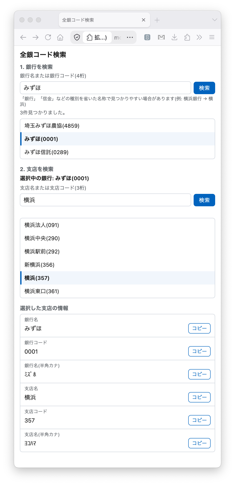

できること
検索画面
銀行名または4桁の銀行コードで検索 → 銀行を選択 → 支店名または3桁の支店コードでその銀行内の支店を検索。銀行名・コード・支店名・コード・半角カナをそれぞれコピーできます。

使い方
- ツールバーのアイコンをクリックして検索画面を開く
- 銀行名または銀行コードを入力して検索し、一覧から銀行を選択する
- 表示された支店検索欄に、支店名または支店コードを入力して検索する
- 一覧から支店を選択すると、銀行名・銀行コード・支店名・支店コード・半角カナが表示されるので、それぞれ「コピー」ボタンでコピーする
検索画面は明示的に閉じるまで開いたままなので、コピーした内容を他のアプリへ貼り付ける操作を挟んでも問題ありません。
入手方法
現在、Chromeウェブストア・Firefox Add-onsでの公開を準備中です。今すぐ試したい方は、GitHubリポジトリのソースコードから手元でビルドして読み込むことができます。
データの取り扱い
検索語は固定のAPIエンドポイント(https://api.zengin.sironekotoro.com)にのみ送信されます。口座番号・名義等の個人情報の入力・保存機能はなく、広告・アクセス解析・トラッキングの類も一切含まれていません。詳しくは
プライバシーポリシー をご覧ください。